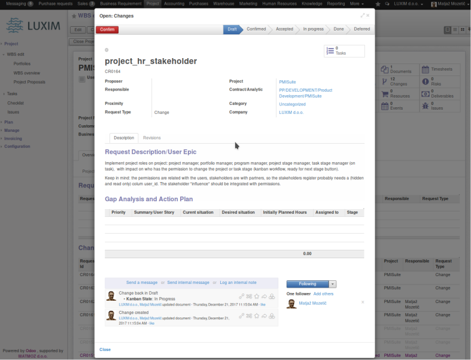
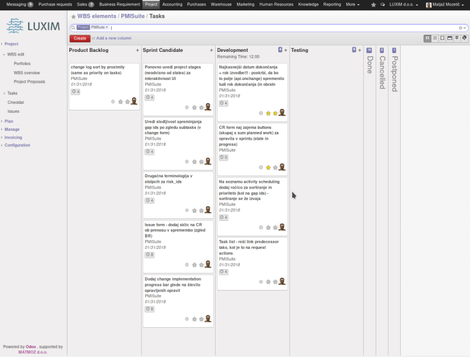

Change requests are handled as project requirements. For known requirements (known specification) define type requirement, for undefined requirements select type change and manage them as an agile project cycle where task stages are considered as iterarions (sprints). Assess (and manage risks) as type risk change requests (tasks are considered as an action plan to follow if the risk "happens".
Project changes of type request handled as Agile "User Epic" term, tasks handled as gap analysis lines (user story lines in Agile terminology).
Project changes of requirement handled as deliverable plan, deliverable lines confirmation workflow integrated with sale workflow. Price analysis on deliverables suggests a target budget (sale price) based on resource plan lines and chosen margins.
Insert a project requirement and manage it through the change management.
 
A change request includes at least three project stakeholders:
The main change request categories are:
To describe a change request we need:
The change enforcing triggers/assigns one or more tasks that are needed to enforce/complete the actual change.
To be able to better manage the priority in a mass of change requests,
we define the change proximity, which can be:
Until the change acceptance, a change request can be changed; it's important to notify the revision date for every such change.